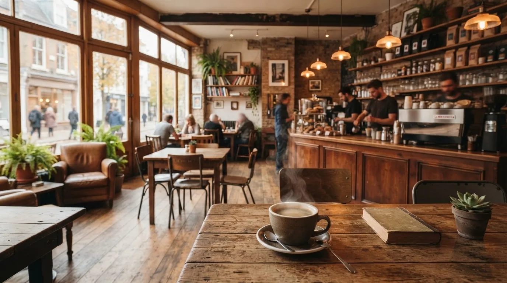
Cafe Hana
自家焙煎のコーヒーと、地元農家から届く旬のフルーツを使ったタルトをご提供するカフェです。
こだわりをもっと見る →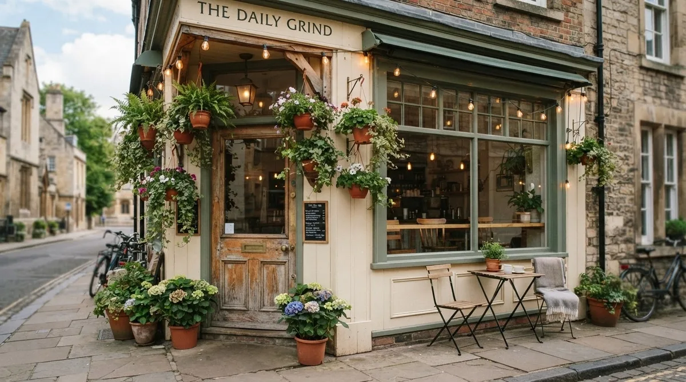
最新の投稿がここに自動表示されます（デモ表示中）
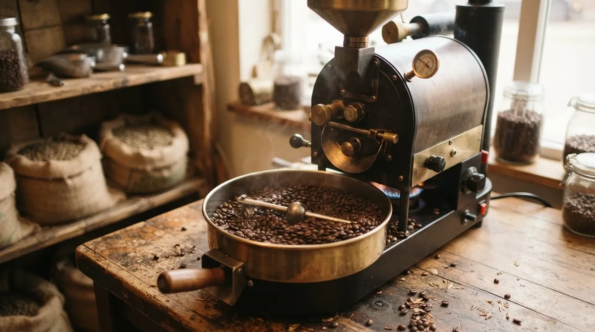
最新のポストがここに自動表示されます（デモ表示中）
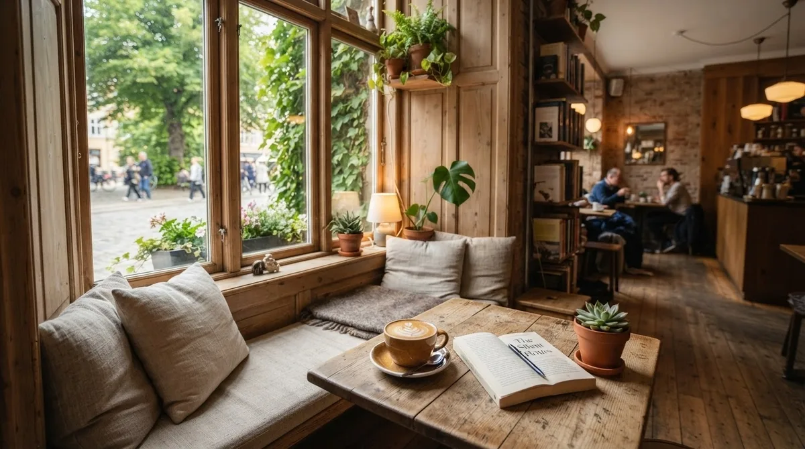
ページの投稿がここに自動表示されます（デモ表示中）
自家焙煎のコーヒーと、地元農家から届く旬のフルーツを使ったタルトをご提供するカフェです。日常のなかにほっとできる場所を、地域の皆さまにお届けします。
豆の状態を毎日確かめながら、店内の焙煎機で少量ずつ丁寧に焼き上げています。
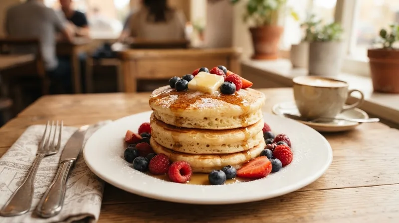
地元農家から届く旬のフルーツや野菜を使い、季節ごとのメニューをご用意しています。
窓際の読書スペースやテラス席など、思い思いに過ごせる席をご用意しています。
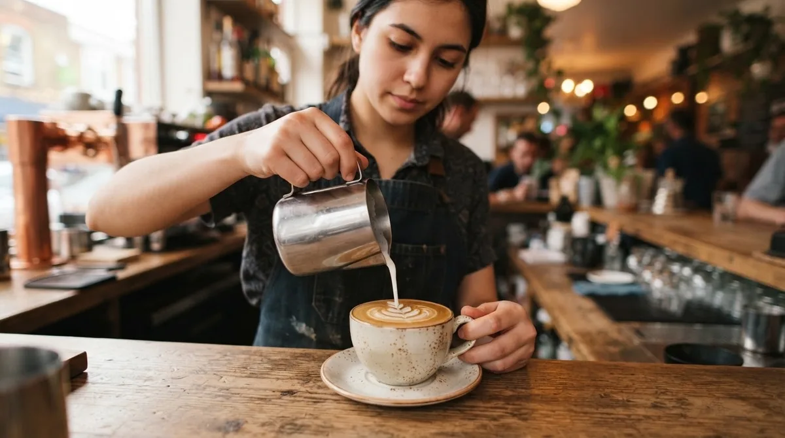
バリスタが一杯ずつ心を込めてラテアートを仕上げ、お渡ししています。
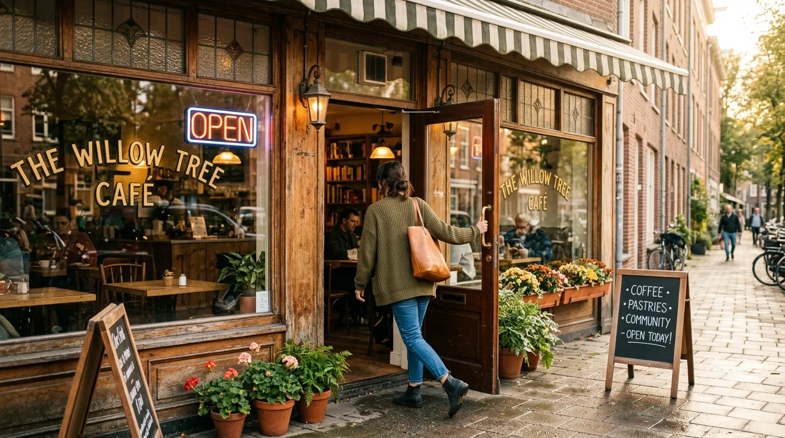
店内へどうぞお入りください。カウンターでスタッフがお出迎えします。
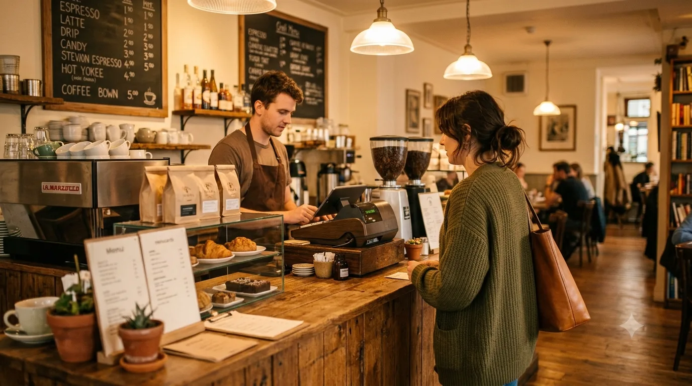
メニューからお好きな一杯やフードをお選びください。
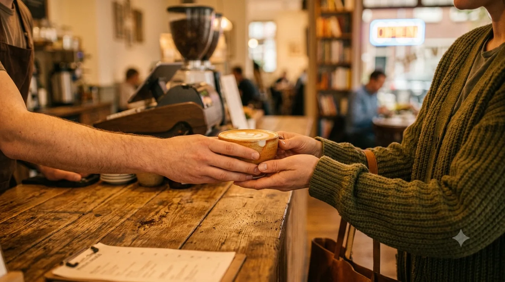
番号札をお呼びしましたら、カウンターまでお越しください。
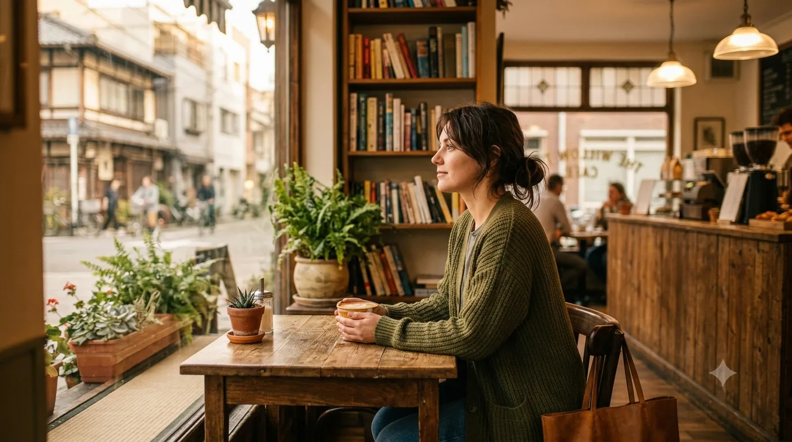
お好きな席で、ごゆっくりお過ごしください。
予約不要でご利用いただけます。混雑時は少々お待ちいただく場合がございます。
近隣にコインパーキングがございます。
一部メニューを除き、テイクアウトも承っております。
使用食材について、スタッフまでお気軽にお尋ねください。
店内全席でWi-Fiと電源をご利用いただけます。
毎週水曜日が定休日です。詳しい営業時間はアクセスページをご確認ください。
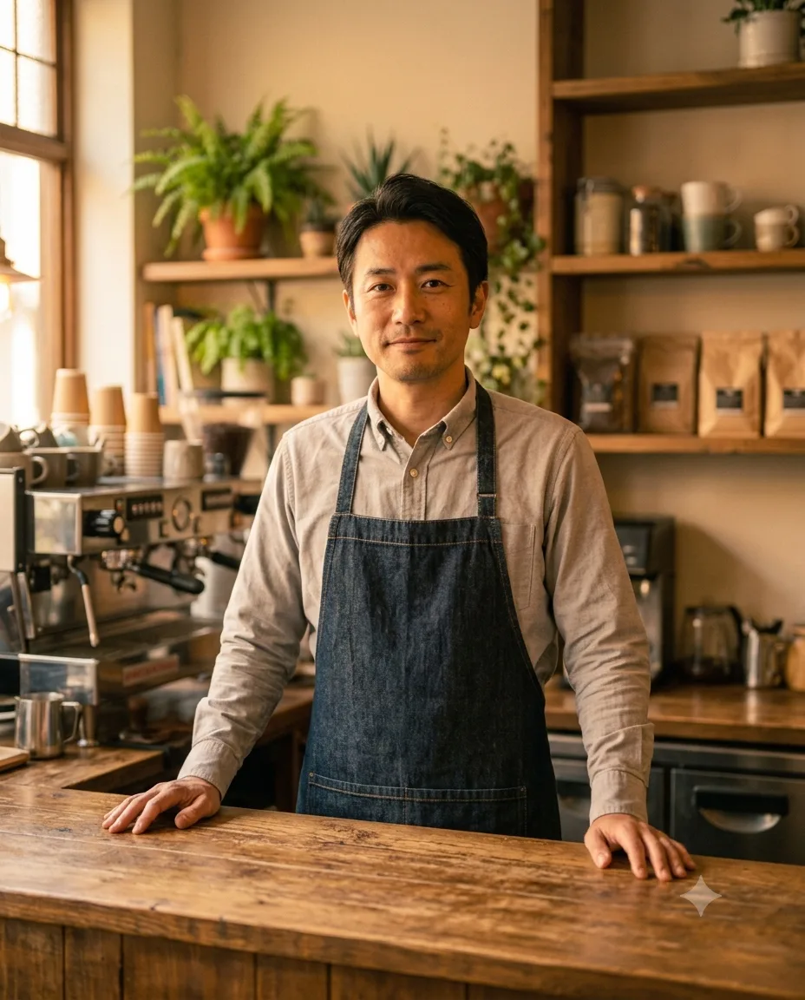
「一杯ごとに、お客様の一日が少しでも豊かになるように。」焙煎からラテアートまで、すべての工程を大切にしています。
「お客様との会話も、Cafe Hanaの大切な時間です。」笑顔でのお出迎えを心がけています。
「旬の果物を使ったタルトや焼き菓子を、毎日少しずつ手作りしています。」季節ごとの味わいをお楽しみください。
焙煎の香りに誘われて、気づけば毎週通うようになりました。
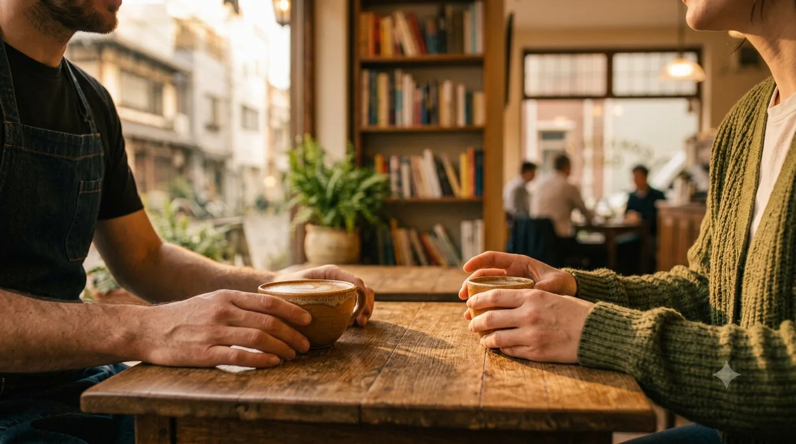
Wi-Fiも電源もあるので、仕事の合間に立ち寄っています。
季節のタルトが楽しみで、来るたびに新しい発見があります。
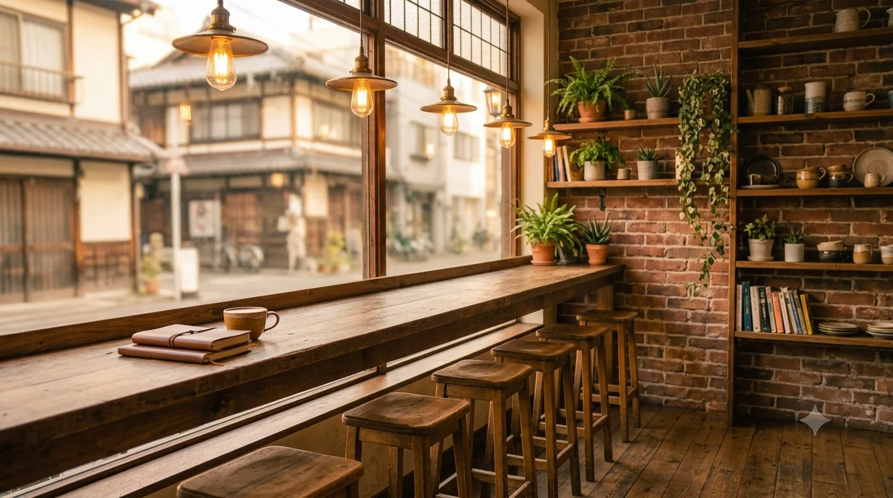
バリスタの手元を眺めながら過ごせる、カウンター席をご用意しています。
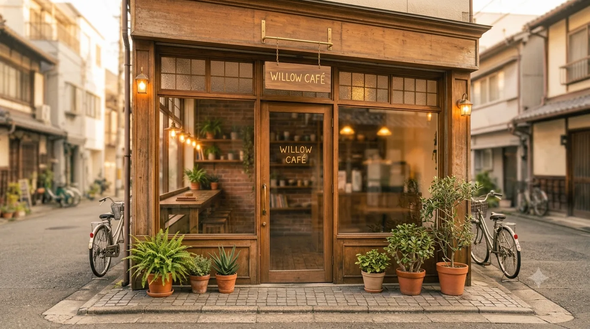
通りに面した、あたたかみのある外観が目印です。
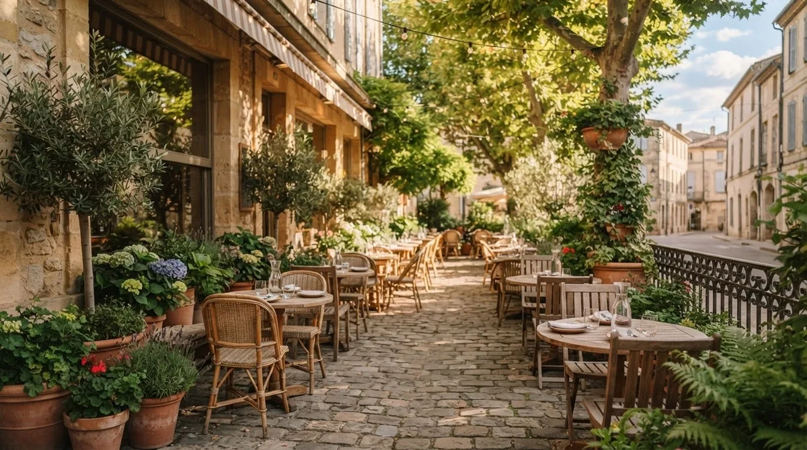
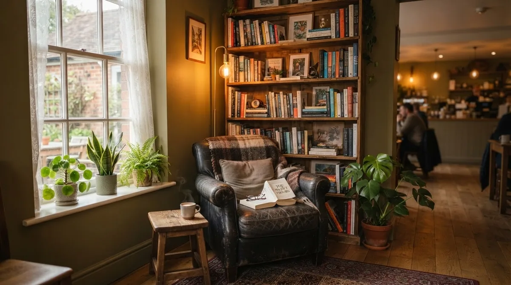
石臼挽きの抹茶を使った新メニューが仲間入りしました。
天気のいい日は、外の空気を感じながらどうぞ。
毎朝2回、焼きたてをご用意しています。
本棚の蔵書を少し増やしました。
平日11:00〜14:00は軽食メニューもご用意しています。
8月中は営業時間を変更しております。詳しくはアクセスページをご覧ください。